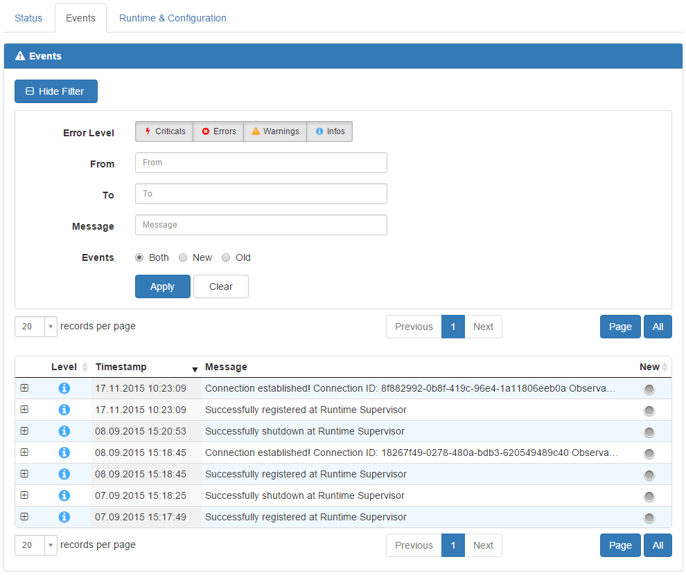

Benutzeroberfläche
Layout

Nach dem Login wird das Runtime Supervisor Dashboard angezeigt, in dem die wichtigsten Daten der Framework Studio Runtime zusammengefasst sind. Sind noch keine Observables registriert, wird einzig der Runtime Supervisor Windows Service angezeigt.
Hauptmenü
Dashboard:
Unterhalb des Menüpunktes “Dashboard” werden Unteransichten für die verschiedenen Observable-Typen angezeigt. Diese werden auch nur dann angezeigt, wenn sich tatsächlich auch Observables am Runtime Supervisor registriert haben. Existiert in der Framework Studio Runtime z.B. kein Document Service (wie in Abbildung 19), wird dieser auch nicht angezeigt. Nach einer Neuinstallation wird also - wie auch im Dashboard - erst einmal nur der Runtime Supervisor Service angezeigt.
Je Observable-Typ wird rechts neben der Bezeichnung die Anzahl der am Runtime Supervisor registrierten Observables dieses Typs angezeigt. Diese Zahl beinhaltet alle Observables, unabhängig davon, ob sie gerade online oder offline sind.
Events:
Über den Menüpunkt “Events” kann die globale Event-Ansicht des Runtime Supervisor erreicht werden. Siehe Kapitel Events.
Settings:
Über den Menüpunkt “Settings” können alle Einstellungen für den Runtime Supervisor vorgenommen werden. Siehe Kapitel Settings.
Toolbar
Die Toolbar ist ein kontextabhängiges Menü, bestehend aus ein oder mehreren Dropdown-Controls. Das in Abbildung 19 gezeigt Dropdown-Control ist statisch und steht jederzeit zur Verfügung. Es beinhaltet folgende Menüpunkte:
Change Password:
Ruft den Dialog zum Ändern des Passworts des angemeldeten Benutzers auf (siehe Kapitel Passwort ändern).
Logout:
Meldet den derzeit angemeldeten Benutzer ab und leitet auf die Login-Seite weiter.
Responsive Design

Um den Runtime Supervisor auch auf kleineren Endgeräten wie Smartphones oder Tablets gut bedienbar zu machen, wurde die Web Application mit einem Responsive Design versehen. Ab einer Bildschirmauflösung von unter 768 Pixeln in der Breite, wird die Seite “zusammengeklappt” und das Hauptmenü ist über einen Button rechts oben auf der Seite (siehe Abbildung) zu erreichen. Die Toolbar wird dann linksbündig angezeigt.
Passwort ändern
Über die Toolbar ist der Menüpunkt “Change Password” erreichbar. Dieser ruft folgenden Dialog zum Ändern des Passworts des aktuell angemeldeten Benutzers auf:

Um das Passwort zu ändern, müssen das derzeitige Passwort sowie das neue Passwort und dessen Wiederholung eingegeben werden. Nach einem Klick auf den Button “Ok” wird eine Bestätigung der Änderung angezeigt.
Dashboard

Das Dashboard besteht aus einer Übersicht über alle am Runtime Supervisor registrierten Observables. Diese sind gruppiert nach Typ.
Name:
Der Name des Observables wird als Link angezeigt. Durch einen Klick kann die Detail-Ansicht des jeweiligen Observables aufgerufen werden (siehe Kapitel Detailansicht).
Server:
Der Server auf dem das Observable läuft.
Version:
Die Version des Observables.
Status:
Online-Status des Observables.
Tooltip: Zeitpunkt der Registrierung am Runtime Supervisor.
Run As:
Information darüber, wie das Observable ausgeführt wird. Die Optionen sind:
- Als Windows Service (Windows-Symbol)
- Als IIS Application (Wolken-Symbol)
- Als Konsolenapplikation (Konsolenfenster-Symbol)
Tooltip: Beschreibung der Ausführungsart.
User:
Benutzer, mit dem das Observable auf dem System ausgeführt wird.
New Events:
Zeigt an, wie viele unbestätigte Events es zu einem Observable gibt, gruppiert nach Event-Art. Gibt es für eine Event-Art keine neuen Einträge, wird das Symbol ausgegraut angezeigt.
Tooltip für jedes Symbol: Beschreibung der Event-Art.
Gruppierte Ansicht

Die gruppierte Ansicht beinhaltet im oberen Teil der Seite den Ausschnitt des Dashboards für den im Hauptmenü ausgewählten Observable-Typ. Im unteren Teil wird eine Event-Tabelle angezeigt, die alle Events für alle Observables des ausgewählten Typs beinhaltet.
Somit können Sie sich z.B. schnell ein Überblick über alle laufenden Framework Studio Broker verschaffen.
Mehr Informationen zum Umgang mit der Event-Tabelle und deren Filterfunktion erfahren Sie im Kapitel Events.
Detailansicht

Diese Ansicht kann erreicht werden, indem im Dashboard, in einer gruppierten Ansicht oder in einer Event-Tabelle auf den Namen eines Observables geklickt wird.
Erweiterte Toolbar
Über das erweiterte Dropdown-Control (Stift) kann das Observable vom Runtime Supervisor gelöscht werden. Das Observable kann sich danach jederzeit wieder am Runtime Supervisor registrieren.
Note
Wird ein Observable gelöscht, werden auch alle zugehörigen Events aus der Datenbank entfernt!
Tab „Status“
Dieser Tab Listet allgemeine Informationen über das Observable auf. Diese sind für alle Observable-Typen identisch.
Panel “Information”
Dieses Panel enthält die wichtigsten Daten zur Identifikation des Observables.
Database ID:
Registriert sich ein Observable am Runtime Supervisor, wird für dieses eine einmalige ID generiert, mit der es in der Datenbank identifiziert werden kann. Das Observable selbst hat keine Kenntnis und keinen Einfluss auf diese Guid.
Client ID:
Diese ID wird auf dem Rechner des Observables generiert. Sie ist u.a. auch abhängig von der Domain und dem Rechnernamen, auf dem das Observable läuft. Dies hat zur Folge, dass z.B. zwei Authentication Services, die zwar die gleiche ID haben, jedoch auf unterschiedlichen Rechnern laufen, vom Runtime Supervisor unterschieden werden können.
Name:
Der Anzeigename des Observables.
Version:
Die Version des Observables wird aus der ausführenden Assembly gelesen (z.B. PrintService.exe).
API Version:
Dies ist die Version der Schnittstelle zwischen dem Observable und dem Runtime Supervisor. Ist die API-Version eines Observables größer als die des Runtime Supervisors, kann dieser nicht mit dem Observable kommunizieren und sollte upgedatet werden.
Ältere Observables können hingegen problemlos auch mit einem neueren Runtime Supervisor kommunizieren.
Type:
Der Typ des Observables (Authentication Service, Print Service, etc.)
Server:
Der Server, auf dem das Observable ausgeführt wird.
Domain:
Die Domain, in der das Observable ausgeführt wird.
Panel “Status”
Dieses Panel gibt Auskunft über den Status des Observables und dessen Verbindung zum Runtime Supervisor.
Status:
Zeigt den Online-Status an. Dieser wird vom Runtime Supervisor in Echtzeit überwacht.
Connection ID:
Die ASP.NET SignalR Connection ID. Diese kann bei der Fehlersuche hilfreich sein und wird in diversen Events angegeben.
Console:
Gibt an, ob das Observable als Konsolenanwendung ausgeführt wird oder nicht. Das kann dann hilfreich sein, wenn z.B. ein Print Service auf einem Server in der Konsole läuft und der Benutzer aus Versehen abgemeldet wird, was ein Beenden des Print Service zur Folge hat.
Registered:
Der Zeitpunkt, an dem sich das Observable beim Runtime Supervisor registriert hat. Ein Observable registriert sich bei jedem Neustart erneut am Runtime Supervisor.
Shutdown:
Der Zeitpunkt, an dem das Observable beendet wurde.
Shutdown Reason:
Der Grund des Beendens des Observables. Kann die Werte “Regular Shutdown” und “Unexpected Disconnect” annehmen.
Panel “System”
Dieses Panel gibt Auskunft über die Hardware des Rechners, auf dem das Observable läuft.
CPU:
Gibt Auskunft über den Prozessor des Rechners.
CPU Architecture:
Gibt Auskunft über die Architektur des Prozessors.
CPU Speed:
Geschwindigkeit des Prozessors.
Physical Cores:
Anzahl der Rechenkerne des Prozessors.
Logical Cores:
Anzahl der logischen Prozessoren des Rechners. Gibt an, ob Hyperthreading unterstützt wird oder nicht.
Installed Memory:
Menge des Arbeitsspeichers des Rechners in MB.
Panel “Software”
Dieses Panel gibt Auskunft über das Betriebssystem des Rechners, auf dem das Observable läuft. Auch Informationen zum Programm selbst sind hier aufgelistet.
OS:
Gibt an, welches Betriebssystem auf dem Rechner installiert ist.
OS Service Pack:
Gibt an, welches Service Pack auf dem Rechner installiert ist.
OS 64 Bit:
Gibt an, ob das Betriebssystem 64 Bit-fähig ist.
User:
Der Name des Users, mit dem das Observable ausgeführt wird.
Application Path:
Das Ausführungsverzeichnis des Observables.
Application Exe:
Die ausführende Assembly des Observables (z.B. PrintService.exe).
Panel “Volumes”

In diesem Panel werden alle lokalen Partitionen des Rechners angezeigt, auf dem das Observable läuft. Entfernbare Geräte wie USB-Sticks, CD-Laufwerke und auch Netzlaufwerke werden nicht angezeigt.
Drive:
Der Laufwerksbuchstabe der Partition.
Label:
Der Name der Partition (kann undefiniert sein).
Size:
Die Größe der Partition in GB.
Free:
Der freie Speicherplatz der Partition in GB.
Used:
Der belegte Speicherplatz der Partition in GB.
Status:
Die Statusleiste zeigt den belegten Speicherplatz der Partition in Prozent an. Überschreitet der Wert 90%, wird der Balken in rot angezeigt.
Tab “Events”

Dieser Tab enthält, wie auch die gruppierte Ansicht, eine Event-Tabelle. In dieser werden ausschließlich die Events des ausgewählten Observables angezeigt.
Mehr Informationen zum Umgang mit der Event-Tabelle und deren Filterfunktion erfahren Sie in Kapitel Events.
Tab “Runtime & Configuration”

Dieser Tab beinhaltet alle Informationen zur Laufzeit und Konfiguration eines Observables. Diese Informationen sind speziell auf den einzelnen Observable-Typ zugeschnitten, können sich also zwischen unterschiedlichen Observable-Typen unterscheiden.
Während der Authentication Service beispielsweise seine Einstellungen zur Sicherheit bekannt gibt, listet der Print Service seine konfigurierten Drucker und Adapter auf. Der Broker hingegen zeigt an, in welchem IIS Application Pool er gerade läuft usw.
Auch Informationen zum laufenden Prozess, belegten Ports oder genutzten Datenbankverbindungen werden hier aufgelistet, falls verfügbar.
Events

Auf dieser Seite werden alle Events von allen am Runtime Supervisor registrierten Observables zusammengefasst angezeigt. Damit ist sie die zentrale Anlaufstelle, wenn es darum geht, herauszufinden, ob es Fehler in der Framework Studio Runtime gegeben hat.
Event Tabelle
Combobox “records per page”:
Über diese Combobox kann ausgewählt werden, wie viele Events je Seite in der Tabelle angezeigt werden sollen. Der Standardwert kann über die Settings (siehe Kapitel Web Application) eingestellt werden.
Navigation:
Mit den Buttons in der Mitte über der Tabelle kann durch diese navigiert werden. Es kann zu einer bestimmten Seite gesprungen werden, oder mit den Buttons “Previous” und “Next” durch die Tabelle geblättert werden.
Button “Page”:
Mit diesem Button können alle als “Neu” markierten Events auf der derzeit angezeigten Seite bestätigt werden.
Button “All”:
Mit diesem Button können alle als “Neu” markierten Events in der gesamten Tabelle (also absolut alle Events des Runtime Supervisor!) bestätigt werden.
Plus “+” Symbol:
Über diesen Button kann ein Event aufgeklappt werden, um den gesamten Mitteilungstext einsehen zu können.
Level:
Zeigt den Error Level des Events.
Timestamp:
Zeigt an, wann das Event eingetreten ist.
Name:
Der Name des Observables, an dem das Event eingetreten ist.
Server:
Der Server, auf dem das betroffene Observable läuft.
Message:
Eine auf 100 Zeichen beschränkte Vorschau des Mitteilungstextes.
New:
Zeigt an, ob das Event bestätigt wurde (grau) oder nicht (grün).
Event Filter

Über den Button “Show Filter” über der Event-Tabelle kann ein Filter-Formular eingeblendet werden, mit dem nach Events gesucht werden kann (siehe Abbildung).
Error Level:
Gibt an, nach welchen Event-Arten gesucht werden soll.
From:
Das Datum und die Uhrzeit ab dem nach Events gesucht werden soll.
To:
Das Datum und die Uhrzeit bis zu dem nach Events gesucht werden soll.
Name:
Der Name des Observables, zu dem nach Events gesucht werden soll.
Server:
Es wird nach allen Events zu Observables gesucht, die auf diesem Server laufen.
Message:
Es wird nach Events gesucht, die im Mitteilungstext die angegebene Zeichenfolge enthalten.
Events:
Gibt an, ob nach bestätigten, unbestätigten oder beiden Events gesucht werden soll.
Button “Apply”:
Startet die Suche und aktualisiert die Event-Tabelle.
Button “Clear”:
Leert das Filter-Formular und stellt den Standardzustand der Event-Tabelle wieder her.
Settings
Die Einstellungen des Runtime Supervisor sollten direkt nach der Installation überprüft werden. Für weitergehende Informationen zum Thema Settings siehe Kapitel Aktualisierung der Settings.
Windows Service

Delete confirmed events after:
In verschiedenen Framework Studio Runtimes können unterschiedlich viele Events auftreten. Der Informationsgehalt dieser ist jedoch meist nur für kurze Zeit aktuell, sodass die Events normalerweise nach einiger Zeit gelöscht werden können, um die Datenbank des Runtime Supervisor nicht unnötig aufzublähen.
Im Textfeld kann die Anzahl Tage angegeben werden, nach denen ein Event-Eintrag verfällt und aus der Datenbank gelöscht werden kann.
Um das automatische Löschen zu deaktivieren (nicht empfohlen), kann der Wert “0” angegeben werden.
Standard: 30 Tage
Mindestwert: 3 Tage
Run the delete task at:
Gibt an, um wieviel Uhr die nicht mehr benötigten Events tatsächlich aus der Datenbank gelöscht werden. Dieser Task läuft täglich.
Standard: 02:00 Uhr
Confirm incoming events of type:
Nicht jedes Event, welches an den Runtime Supervisor gemeldet wird, ist von so hohem Informationsgehalt, dass eine manuelle Bestätigung seitens des IT-Verantwortlichen notwendig ist. Meist sind das Events vom Typ “Information”.
Über die Button kann eingestellt werden, für welche Event-Typen der Runtime Supervisor beim Erfassen eines Events dieses von vornherein schon auf “bestätigt” setzen soll (das Event wird dann in der Event-Tabelle nicht grün angezeigt).
Standard: “Information”
Web Application

Web Application Root:
Diese Einstellung ist wichtig, wenn das Alerting-System verwendet wird. Die eingegebene URL muss auf die Web Application des Runtime Supervisor zeigen. Wird ein Event per eMail versendet, beinhaltet diese einen Link zum betroffenen Observable. Dadurch kann aus dem eMail-Programm heraus direkt zur Runtime Supervisor Web Application gesprungen werden. Die Adresse, die für diese Links verwendet wird, ist die im Textfeld eingegebene.
Ist der Web Server, auf dem die Web Application läuft, von extern über die gleiche URL erreichbar, wie auf dem Server selbst (das ist meistens der Fall, wenn sich der Web Server in der gleichen Domain befindet, wie die Client-Rechner), kann die URL über den Button “Current” eingestellt werden.
Number of records per page in events grid:
Gibt die Anzahl der Events an, die in der Event-Tabelle standardmäßig angezeigt werden soll.
Standard: 25
Number of records per page in observable types grid:
Gibt die Anzahl der Events an, die in der Event-Tabelle in der Observable-Typ-Übersicht standardmäßig angezeigt werden soll.
Standard: 10
Number of records per page in observable details grid:
Gibt die Anzahl der Events an, die in der Event-Tabelle in der Detailansicht eines Observables angezeigt werden soll.
Standard: 10
SMTP

Soll das automatische Alerting-System des Runtime Supervisor genutzt werden, muss dies über die SMTP-Einstellungen aktiviert werden. Sind die SMTP-Daten korrekt angegeben und sind im Reiter “Alerting” aktive Empfänger eingetragen, versendet der Runtime Supervisor beim Eingang eines Events eine eMail an jeden Empfänger, der für den Event-Typ des Events freigeschaltet ist.
Enabled:
Aktiviert oder deaktiviert das Versenden von eMails beim Eingang von Events.
Server or IP:
Der Name oder die IP des zu verwendenden Mailservers.
Security:
Die Verschlüsselung, die zum Versenden der eMails genutzt werden soll. Wird die Auswahl geändert, wird im Feld „Port“ der zur Verschlüsselungsart zugehörige Standardport eingetragen
Verschlüsselung
Port
None
25
STARTTLS
587
SSL/TLS
465
Port:
Der Port, der zum Versenden der eMails genutzt werden soll.
User:
Der Benutzer, mit dem die eMail vom Mailserver aus versendet werden soll.
Password:
Das zum User zugehörige Passwort.
Domain:
Die Domain, in der sich der angegebene Benutzer befindet.
Sender Mail Address:
Die eMail-Adresse, die zum Versenden der eMails genutzt werden soll.
Sender Name:
Der Anzeigename des Versenders der eMail (wird nicht von allen eMail Clients unterstützt).
Send mail as HTML:
Die eMails werden im HTML-Format optisch etwas aufgewertet versendet (wird nicht von allen eMail Clients unterstützt).
Alerting

In diesem Reiter sind alle Empfänger aufgelistet, die beim Eingang eines Events am Runtime Supervisor per eMail benachrichtigt werden.
Active:
Zeigt an, ob der Empfänger aktiviert ist. Nur aktivierte Empfänger bekommen eMails vom Runtime Supervisor.
Mail:
Die eMail-Adresse, an die Benachrichtigungen versendet werden.
Name:
Der Name des Empfängers
Configuration:
Zeigt an, für welche Event-Typen der Empfänger benachrichtigt wird. Im Beispiel in Abbildung 33 bekommt der Empfänger für alle Event-Typen außer “Information” eine eMail.
Button “Edit”:
Über diesen Button können die Einstellungen des Empfängers geändert werden.
Button “Delete”:
Löscht den Empfänger aus der Liste.
Button “Add Receiver”:
Öffnet einen modalen Dialog zum Anlegen eines neuen Empfängers.